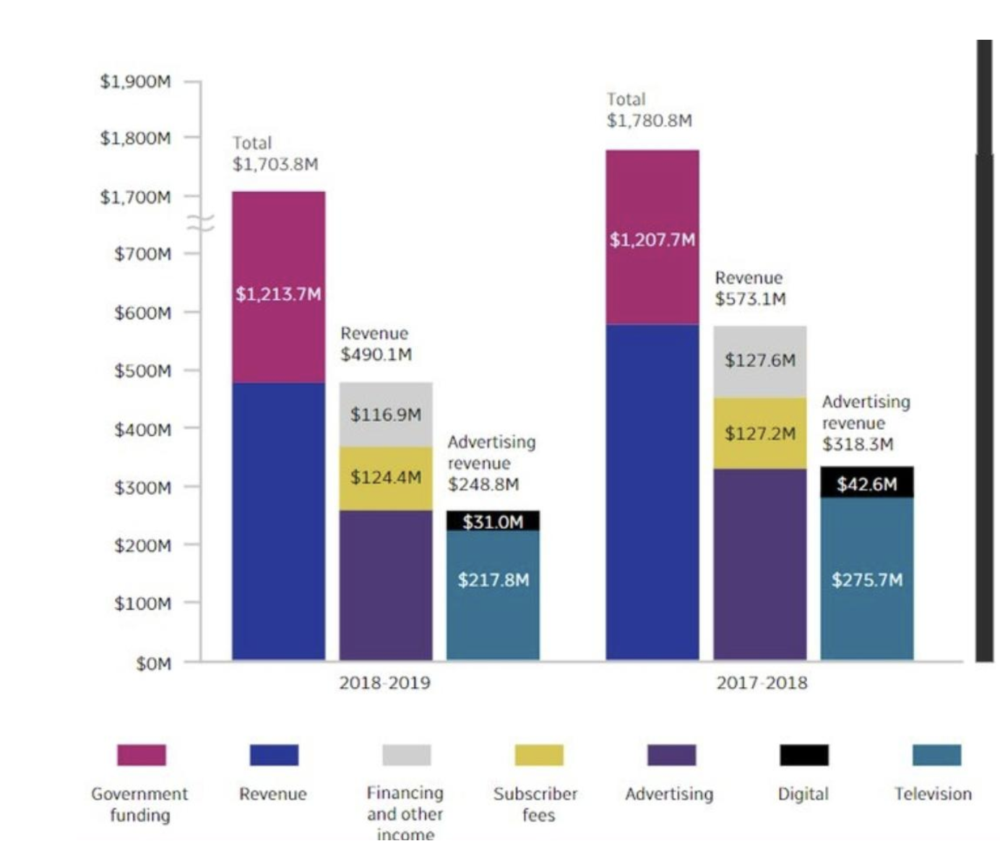

about
# Redesign of Visualizations
This chart from the Canadian National Broadcast Company showing their sources of funding in two financial years.Issues with the Graph
- The Y-axis has an unnatural break between $700M and $1,700M, making the scale misleading.
- The $490M revenue appears larger than the $1.2B government funding due to this distortion.
- At first glance, it seems that television revenue is equal to government funding because the bars representing them are almost the same length.
- The distortion in the Y-axis makes the visual comparison inaccurate, leading to misinterpretation.
- The revenue and advertising revenue should not be separate bars; they should subdivide the total income bar.
- The second and third bars only represent subdivisions of the first bar but are presented as separate, contributing to the confusion.
year vs amount by source of funding
Changes I Made to the Bar Chart
- Removed the unnatural break between $700M and $1,700M for accurate data representation.
- Corrected bar heights to accurately compare the revenue of $490M to the government funding of $1.2B.
- Merged separate income components (such as advertising revenue) into the total income bar for a clearer breakdown.
- Improved the overall readability by using consistent color schemes and labels for different income categories.
Percantage of amount by source of funding
Changes Made to the Pie Charts:
Introduced pie charts to show the proportional contribution of each funding source for 2017-18 and 2018-19.
Used percentages to emphasize the dominance of government revenue, making it easier to understand the composition of the total funding.
Ensured each section is clearly labeled and color-coded to match the funding categories, improving quick identification and comparison.
Summary
- Y-Axis Distortion: By removing the unnatural break between $700M and $1,700M, you corrected the misleading scale, allowing for a more accurate representation of the data.
- Bar Height Accuracy: The adjustment of bar heights ensured that the $490M revenue no longer appears larger than the $1.2B government funding, providing a correct visual comparison.
- Component Merging: Merging the separate income components (such as advertising revenue) into the total income bar resolved the confusion caused by showing them as separate bars. This now clearly reflects the subdivisions within the total income.
- Improved Visualization: The consistent color schemes and labels, along with the use of pie charts for proportional representation, enhance the clarity and comprehension of how each funding source contributes to the overall total.
Refrences
https://www.codeconquest.com/blog/12-bad-data-visualization-examples-explained/